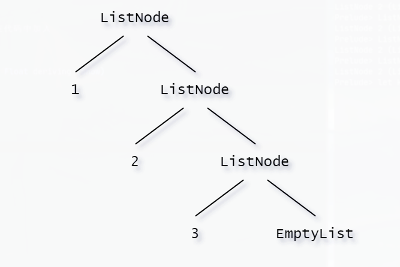

Types & Typeclasses
Haskell Learning
Types & Typeclasses
Type
Haskell 是 Static Type
的，在编译时期每个表达式的值就已经确定，提高了代码的安全性，同时 Haskell
支持类型推导。
| Type |
Description |
| Int |
整型：-2147483648 ～ 2147483647 |
| Integer |
无界整型，但效率不及 Int |
| Float |
单精度浮点数 |
| Double |
双精度浮点数 |
| Bool |
布尔值 |
| Char |
字符 |
Typeclasses
| Typeclasses |
Description |
| Eq |
包含可判断相等性的型别。 |
| Qrd |
包含可以比较大小的型别 |
| Show |
可用字串表示的型别 |
| Read |
与 Show 相反的 Typeclass |
| Enum |
连续型别-可枚举 |
| Bounded |
有上下限的 Typeclass |
| Num |
数字的 Typeclass |
| Integral |
Int Integer |
| Floating |
Float Double |
1
2
|
ghci> :t fromIntegral
fromIntegral :: (Num b, Integral a) => a -> b
|
formIntegral 取一个整数做参数并回传一个更加通用的数字，这在同时处理整数和浮点时会尤为有用。
定义新的 Type 和 Typeclass
Algebraic Data Types
Bool 类型的定义
1
|
data Bool = False | True
|
data 表示我们要定义一个新的型别。= 的左端标明型别的名称即 Bool，= 的右端就是值构造子 (Value Constructor)，它们明确了该型别可能的值。| 读作"或"，所以可以这样阅读该声明：Bool 型别的值可以是 True 或 False。型别名和值构造子的首字母必大写。
值构造子也是函数，可以附带参数，叫做项 field：
1
|
data Shape = Circle Float Float Float | Rectangle Float Float Float Float
|
定义了一个新 Type 叫 Shape，值构造器是 Circle 和 Rectangle，Circle 接收三个参数都是 Float 类型，Rectangle 接收四个 Float 类型参数。
对于 Circle：
$$Circle :: Float \to Float \to Float \to Shape$$
如果像使用 show 将它显示出来，则需要将它加入 Show 类型类。需要在代码中加入
deriving (Show):
1
|
data Shape = Circle Float Float Float | Rectangle Float Float Float Float deriving (Show)
|
** 导出一个 Type**
在文件中定义了新的 Type 之后，如果在别的文件中将其作为模块导入，则需要先导出。比如文件 Shapes.hs 中定义了 Shape 和 Point，以及其他的一些函数，那么文件开头需要写：
1
2
3
4
5
6
|
module Shapes
( Shape(..)
, Point(..)
, functionA
, functionB
) where
|
其中的 Shape(..) 导出了 Shape 类型和它所有的值构造器，..代表了它的所有值构造器。因此，Shape(..)相当于Shape (Circle, Rectangle)。
如果不想要导出值构造器，即不允许使用值构造器的方法来创建Shape类型的变量。那么需要将Shape(..)替换为Shape，这样就只导出了Shape类型，而不导出其值构造器。
Record Syntax
1
2
3
4
5
6
7
|
data Person = Person { firstName :: String
, lastName :: String
, age :: Int
, height :: Float
, phoneNumber :: String
, flavor :: String
} deriving (Show)
|
调用时：
1
2
3
4
5
6
7
|
Prelude> let person = Person {firstName = "Allen",lastName = "Ma",age = 18, height = 178.0, phoneNumber ="1008611",flavor = "Haskell"}
Prelude> person
Person {firstName = "Allen", lastName = "Ma", age = 18, height = 178.0, phoneNumber = "1008611", flavor = "Haskell"}
Prelude> lastName person
"Ma"
Prelude> age person
18
|
Type parameters
值构造器可以接收参数，类型也可以接收参数，这样它就成为了类型构造器（type constructors）。如 Maybe 的定义：
1
|
data Maybe a = Nothing | Just a
|
它的值是 Nothing 时，类型为 Maybe a，是多态的（polymorphic）。
他的值不是 Nothing 时，类型取决于值 Just a 中 a 的类型，可以构造出 Maybe Int、Maybe [Char]等多种类型：
1
2
3
4
|
Nothing :: Maybe a
Just 1 :: Num a => Maybe a
Just 'a' :: Maybe Char
Just "abc" :: Maybe [Char]
|
Either
Either 是一个类型构造器，它有两个值构造器，定义是：
1
|
data Either a b = Left a | Right b deriving (Eq, Ord, Read, Show)
|
如果使用了 Left，那它的 a 的类型就是具体的；如果使用了 Right，那它的 b 的类型就是具体的：
1
2
3
4
5
6
7
8
|
ghci> Right 20
Right 20
ghci> Left "w00t"
Left "w00t"
ghci> :t Right 'a'
Right 'a' :: Either a Char
ghci> :t Left True
Left True :: Either Bool b
|
Either 可以看作 Maybe 的补充，比如 Maybe 在使用时，出现异常可以返回 Nothing，但只是一个 Nothing，不包含任何信息；但 Either 包含左值和右值，正常结果返回右值，而出现异常就可以返回包含错误信息的左值.
1
2
3
4
5
6
7
8
|
safeDiv :: Int -> Int -> Maybe Int
safeDiv _ 0 = Nothing
safeDiv x y = Just (x `div` y)
ghci> safeDiv 4 2
Just 2
ghci> safeDiv 1 0
Nothing
|
1
2
3
4
5
6
7
8
|
safeDiv :: Int -> Int -> Either String Int
safeDiv _ 0 = Left "Divided by zero"
safeDiv x y = Right (x `div` y)
ghci> safeDiv 4 2
Right 2
ghci> safeDiv 1 0
Left "Divided by zero"
|
Derived instances
想要使一个定义的类满足某些 Typeclass 的需求，需要从其派生（derive），比如：
1
2
|
data Day = Monday | Tuesday | Wednesday | Thursday | Friday | Saturday | Sunday
deriving (Eq, Ord, Show, Read, Bounded, Enum)
|
这样 Day 类型的值（Monday ～ Sunday）之间就可以比较是否相等（从 Eq 派生），比较大小（从 Ord 派生，左侧为小，右侧为大），显示成字符串（从 Show 派生），从字符串中读取（从 Read 派生），包含边界（从 Bounded 派生），可以枚举（从 Enum 派生，按照值构造器中的顺序依次向右）
Type synonyms
为了阅读方便，书写简便，可以使用 type 关键字为已有类型创建别名（synonyms）。比如 String 的定义：
在所有需要使用字符串（即[Char]）的地方都可以使用 String 来代替，它们是完全一致的，只是 String 更简便易读。
同时，类型别名也可以接收类型参数
newtype keyword
除了data、type关键字之外，还可以用newtype关键字来定义一个新的类型，比如Control.Applicative模块中的ZipList：
1
|
newtype ZipList a = { getZipList :: [a] }
|
Recursive data structures
一个类型可以进行递归定义
1
|
data Tree a = EmptyTree | Node a (Tree a) (Tree a) deriving (Show, Read, Eq)
|
定义新的 Typeclass
定义一个新的 Typeclass 需要使用 class 关键字，例如Eq类型类：
1
2
3
4
5
|
class Eq a where
(==) :: a -> a -> Bool
(/=) :: a -> a -> Bool
x == y = not (x /= y)
x /= y = not (x == y)
|
其中 a 是一个类型变量，前两行声明了需要实现的函数的名字及其类型，后两行表明了需要的函数之间可以相互定义（不必要）。
包含了后两行之后，只定义(==)函数或者(/=)函数都可以完成全部定义，它们((==) | (/=))成为这个类型类的最小完整定义（minimal complete definition）
查看一个类型类的成员需要实现的函数可以在 GHCi 中使用:info：
创建实例
是一个类型成为一个类型类实例可以通过 deriving 来自动完成，也可以通过使用
instance 关键字来手动完成，比如使 Point 成为是 Show 的实例：
1
2
3
4
5
6
|
instance Show Point where
show (Point x y) = "(" ++ show x ++ ", " ++ show y ++ ")"
-- in ghci
ghci> Point 1.0 2.0
(1.0, 2.0)
|
这样就可以自定义显示的内容，否则使用 deriving 的话只会直接将其转化为字符串。
同时也要注意类型和类型构造器的区别，传入给 instance 的第二个参数应该为类型而不是类型构造器，比如 Maybe：
1
2
3
4
5
6
7
8
9
10
11
12
|
instance Eq Maybe where
...
-- 错误用法，因为Maybe是类型构造器而不是类型
instance Eq (Maybe m) where
...
-- 错误用法，因为m不一定是Eq的成员
instance (Eq m) => Eq (Maybe m) where
Just x == Just y = x == y
Nothing == Nothing = True
_ == _ = False
|
我们使用 haskell 定义一个我们自己的 list :
1
|
data MyList t = EmptyList | ListNode t (MyList t)
|
官方的 Haskell 列表定义是这样的：data [] a = [] | a : [a]

1
2
3
|
sum :: (MyList Integer) -> Integer
sum EmptyList = 0
sum (ListNode first rest) = first + (sum rest)
|
1
2
3
4
5
|
data MyList t = EmptyList | ListNode t (MyList t)
appendRight :: MyList t -> t -> MyList t
appendRight EmptyList element = (ListNode element EmptyList)
appendRight (ListNode first rest) element = ListNode first (appendRight rest element)
|
Mylist
1
2
3
4
5
6
7
8
9
10
11
12
13
14
15
16
17
18
19
20
21
22
23
24
25
26
27
28
29
30
31
32
33
34
35
36
37
38
39
40
41
42
43
44
45
46
47
48
49
50
51
52
53
54
55
56
57
58
59
60
61
62
63
64
|
data MyList t = EmptyList | ListNode t (MyList t) deriving (Show)
listt = ListNode 7 (ListNode 3 (ListNode 5 (ListNode 8 EmptyList)))
isEmpty :: MyList a -> Bool
isEmpty EmptyList = True
isEmpty _ = False
take'' :: Int -> MyList a -> MyList a
take'' n _
| n <= 0 = EmptyList
take'' _ EmptyList = EmptyList
take'' n (ListNode first rest) = ListNode first (take'' (n -1) rest)
repeat' :: a -> MyList a
repeat' x = ListNode x (repeat' x)
sum' :: (Num a) => MyList a -> a
sum' EmptyList = 0
sum' (ListNode first rest) = first + sum' rest
product' :: (Num a) => MyList a -> a
product' EmptyList = 0
product' (ListNode first rest) = first * product' rest
appendRight :: a -> MyList a -> MyList a
appendRight element EmptyList = ListNode element EmptyList
appendRight element (ListNode first rest) = ListNode first (appendRight element rest)
appendLeft :: a -> MyList a -> MyList a
appendLeft = ListNode
filter'' :: (a -> Bool) -> MyList a -> MyList a
filter'' _ EmptyList = EmptyList
filter'' judge (ListNode first rest)
| judge first = ListNode first (filter'' judge rest)
| otherwise = filter'' judge rest
zipWith'' :: (a -> a -> a) -> MyList a -> MyList a -> MyList a
zipWith'' _ EmptyList _ = EmptyList
zipWith'' _ _ EmptyList = EmptyList
zipWith'' func (ListNode first1 rest1) (ListNode first2 rest2) = ListNode (func first1 first2) (zipWith'' func rest1 rest2)
addList :: MyList a -> MyList a -> MyList a
addList l EmptyList = l
addList EmptyList l = l
addList l1 (ListNode first rest) = addList (appendRight first l1) rest
quickSort :: (Ord a) => MyList a -> MyList a
quickSort EmptyList = EmptyList
quickSort (ListNode first rest) =
let small = quickSort (filter'' (<= first) rest)
big = quickSort (filter'' (> first) rest)
in small `addList` (ListNode first EmptyList) `addList` big
createList :: [t] -> MyList t
createList [] = EmptyList
createList (x : xs) = ListNode x $ createList xs
list1 = createList [2, 4, 1, 0, 7, 4]
main = do
print list1
print $ quickSort list1
|
Functor Typeclass
1
2
|
class Functor f where
fmap :: (a -> b) -> f a -> f b
|
其中 f 是一个类型构造器，而不是一个具体类型
Kind
一个值的类型叫做类型 Type ，而一个类型的类型叫做 Kind。可以通过 GHCi 中 :k 来查看 Kind：
1
2
3
4
5
6
7
8
|
ghci> :k Int
Int :: *
ghci> :k Maybe
Maybe :: * -> *
ghci> :k Maybe Int
Maybe Int :: *
ghci> :k Either
Either :: * -> * -> *
|
其中的星号 * 代表了一个具体类型（concrete type）。Int 本身就是一个具体类型，所以 Int 的 Kind 是 *。而 Maybe 是一个类型构造器，它接收一个具体类型返回一个新的具体类型，所以 Maybe 的 Kind 是 *->*。如果给 Maybe 传入了一个 Int，那么得到的 Maybe Int 就是一个具体的类型，它的 Kind 就是 *。Either 也是一个类型构造器，但它接收两个类型才产生一个新的类型，所以 Either 的 Kind 是 * -> * -> *。